数学工具箱：公式背后的六件事
电路里的公式，其实只用到几样数学：直线、斜率、面积、指数、复数、方程。先把它们变成“看得见的图”，公式就不再是符号堆。
① 直线：y = kx + b
k 是斜率，意思是“横着走一格，竖着升多少”。b 是截距，意思是“起点在哪”。
电阻的电压—电流关系就是一条过原点的直线：斜率就是电阻。斜率越大，同样的电流需要越高电压。
② 导数：曲线在某点的“陡不陡”
导数就是切线斜率，也就是“变化率”。电压变化得越快，电容电流越大；电流变化得越快，电感电压越大。
v = L · di/dt
③ 积分：把无数小条“加起来”
积分就是曲线下的面积。电流一点点流，电荷就一点点攒；功率一点点给，能量就一点点攒。
w(t) = ∫ p dt
④ 指数：变化率和“自己”成正比
eat 求导还是 eat 乘 a。a 为负就衰减，a 为正就发散。RC 充电、RL 电流、一阶响应，全是这条曲线。
v = V(1 − e−t/τ)
⑤ 复数：长度 + 角度
j² = −1。一个复数可以看成平面上的箭头：长度是幅度，角度是相位。乘 j 就是逆时针转 90°。相量就是“会转的复数”。
⑥ 微分方程：把“变化率”写成方程
一阶方程 y′ + ay = x 的解里一定带 e−at。a 的符号决定衰减还是发散；二阶方程则多出一对“阻尼 + 振荡”。
把“斜率”和“面积”画出来
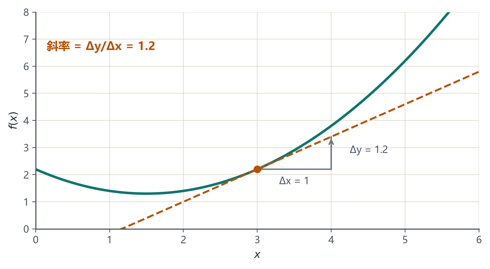
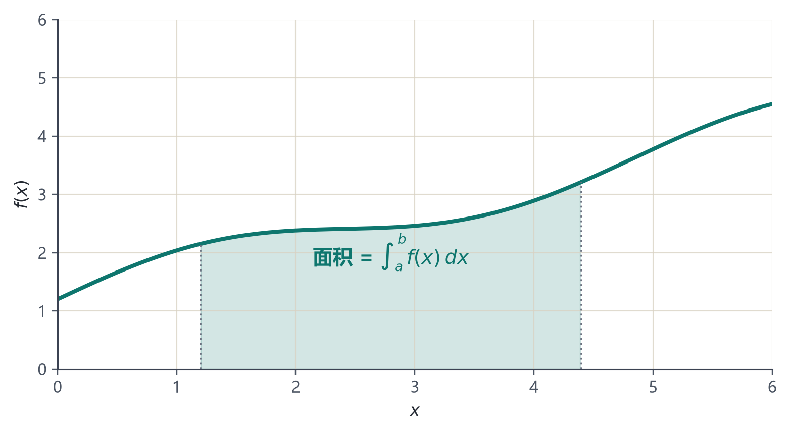
把“旋转”和“衰减”画出来
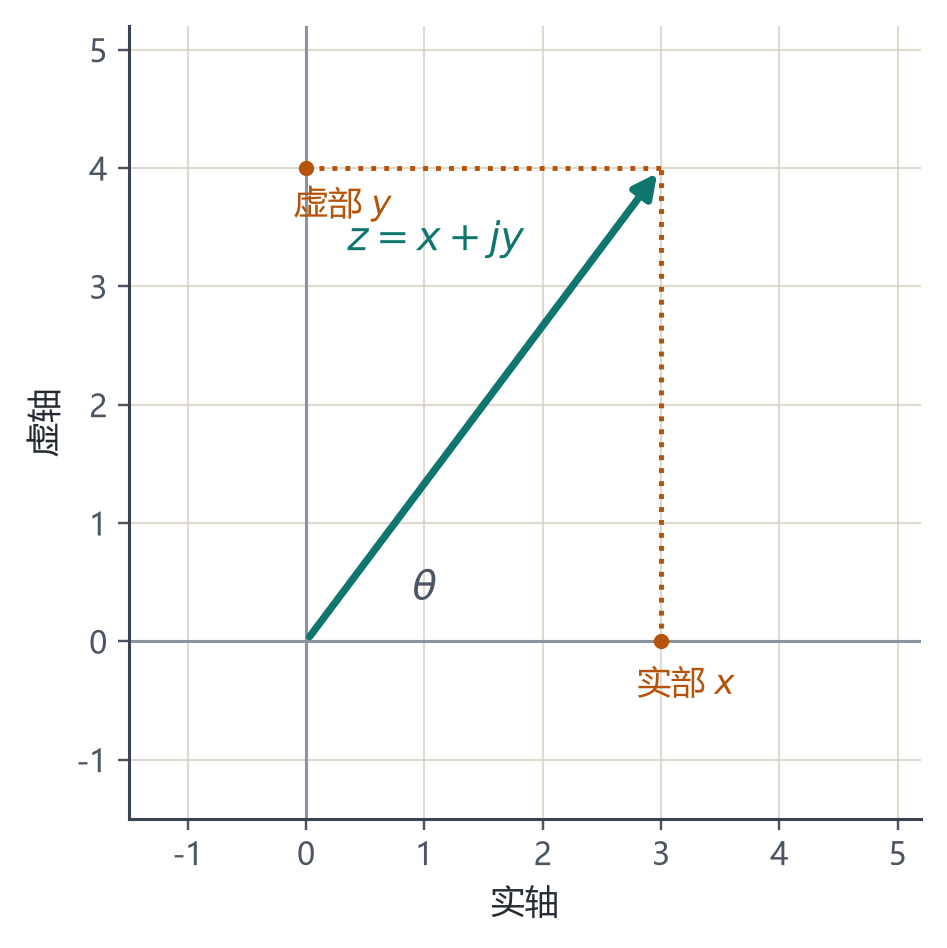
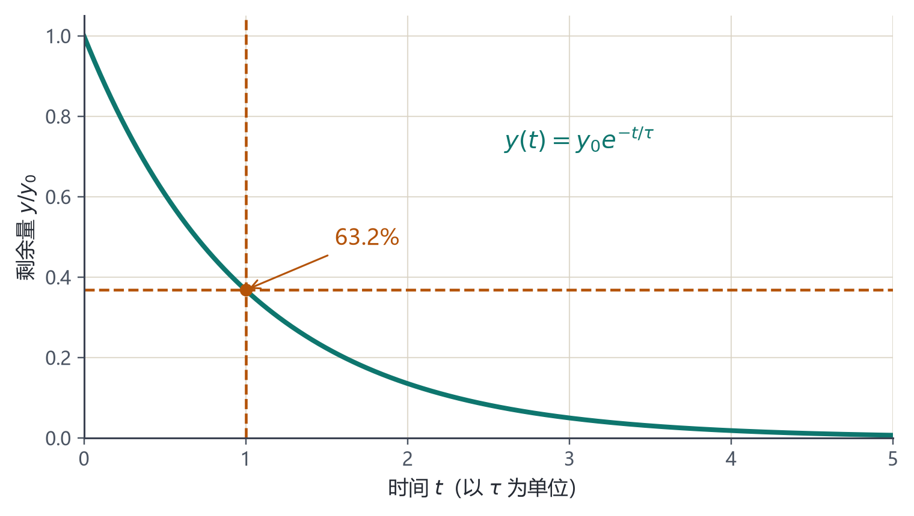
还有两件小工具：矩阵与对数
矩阵只是“把联立方程排整齐”。节点法、网孔法列到最后，都是 Ax = b。行列式不为零，才有唯一解；Cramer 法则就是“用行列式相除”解出每个未知量。
xi = det(Ai) / det(A)
对数把乘法变成加法：log(ab) = log a + log b。Bode 图正是利用这一点——串联环节的增益相乘，在对数坐标里变成斜率相加。
log(ab) = log a + log b
① 它说的是“直线”还是“曲线”？
② 它是在“求变化率”还是在“求累积”？
③ 它是“时域”的话，能不能换到频域或 s 域，把微积分变成代数？
这三问能解决电路里八成公式的“来历”问题。
先把电想成水
电路里的东西看不见摸不着。最好的入门办法，是先找一套“水管”来类比；等直觉长出来，再换回电的语言。
电压像水位差，电流像水流量，电阻像细管子，电容像水罐，电感像水轮，电源像水泵，地像海平面。电路图就是一张水管图：线是管子，元件是管子上的器件，节点是接头。
电压 = 水位差
两点之间的“高度差”。高度差越大，推动水流的力量越大。
电流 = 流量
每秒钟流过多少水。它“穿过”导体，不是“跨在”两点上。
电阻 = 细管
管子越细，同样的水压下水流量越小；电阻越大，电流越小。
电容 = 水罐
能存水，水位不能瞬间改变；对应电容电压不能跳变。
电感 = 飞轮
有惯性，水流不能瞬间改变；对应电感电流不能跳变。
地 = 海平面
只是选定的零高度，不是“把电路埋进土里”的安全接地。
图可以拉长、弯曲、重画，只要“谁和谁相接”不变，电路的行为就不变。这个“只认连接关系”的性质，叫拓扑。
再深入一点：电压和电流到底是怎么“定义”的
本书不先假设“电压是什么”，而是规定一套操作：用电压表跨接两点，红笔接“＋”、黑笔接另一点，读数由数值、单位、符号三部分组成。换一下表笔，符号就反过来——这就是参考方向。
双下标 vab 里，第一个字母带“＋”，第二个带“－”，所以交换下标必须变号。节点电压则是把黑笔固定在参考点，红笔逐点去量；换一个参考点，所有节点电压整体平移，但两点之间的电压差不变。
电荷和磁链是“累积量”：电流积成电荷，电压积成磁链。它们都带初始值，这正是后面“初始条件”的来源。
q(t) = q0 + ∫0t i dτ
λ(t) = λ0 + ∫0t v dτ
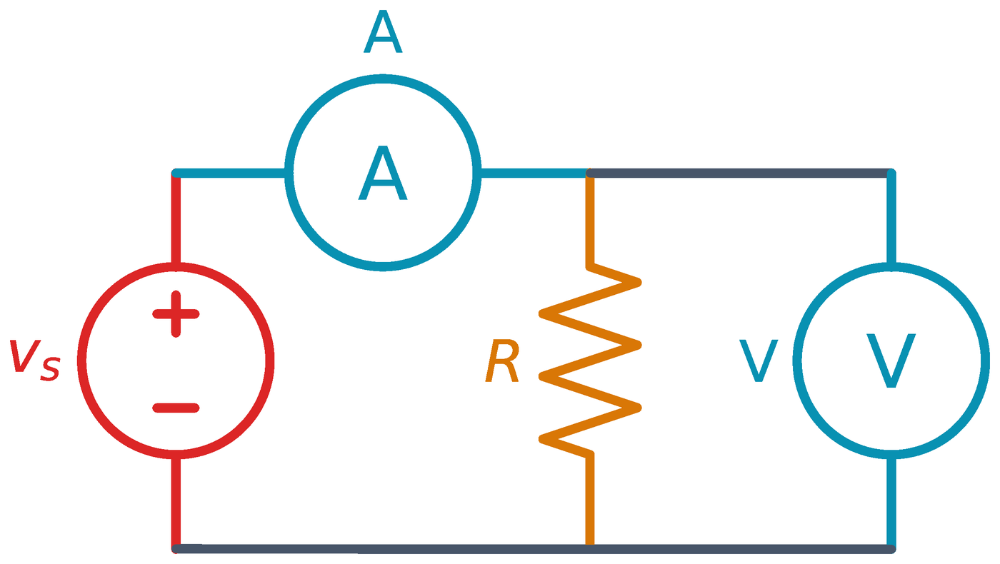
现实里：手机充电器
充电器把墙上的 220 V 交流变成 5 V 直流，靠的就是“电压变换 + 整流 + 滤波”。你摸到的“5 V”是两点之间的高度差，不是“电子有多快”。
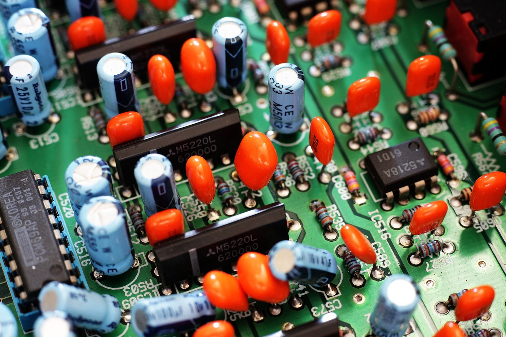
三个基本量：电压、电流、时间
电路里所有的量，最后都能追到三个“可以直接测量”的基本量。其余都是它们乘出来、积出来的。
- 电压：两点之间的高度差。双下标 vab 表示 a 比 b 高，交换下标就变号。
- 电流：穿过导体的流量。箭头是人为规定的正方向，反接读数变号。
- 时间：一切“变化快慢”的标尺。电容、电感之所以有“记忆”，就是因为它们对时间累积。
选一个节点当 0 V（参考点），其他节点相对它的电压就是节点电压。换一个参考点，所有节点电压整体平移，但任意两点之间的电压差不变。
功率：元件是在“吃”还是在“吐”
按关联方向（电流从电压的“＋”端流入）算，功率等于电压乘电流。结果是正，元件在吸收；结果是负，元件在发出。
能量就是功率随时间的累积。只吸收、不发出的叫无源元件；能够对外供能的叫有源元件。
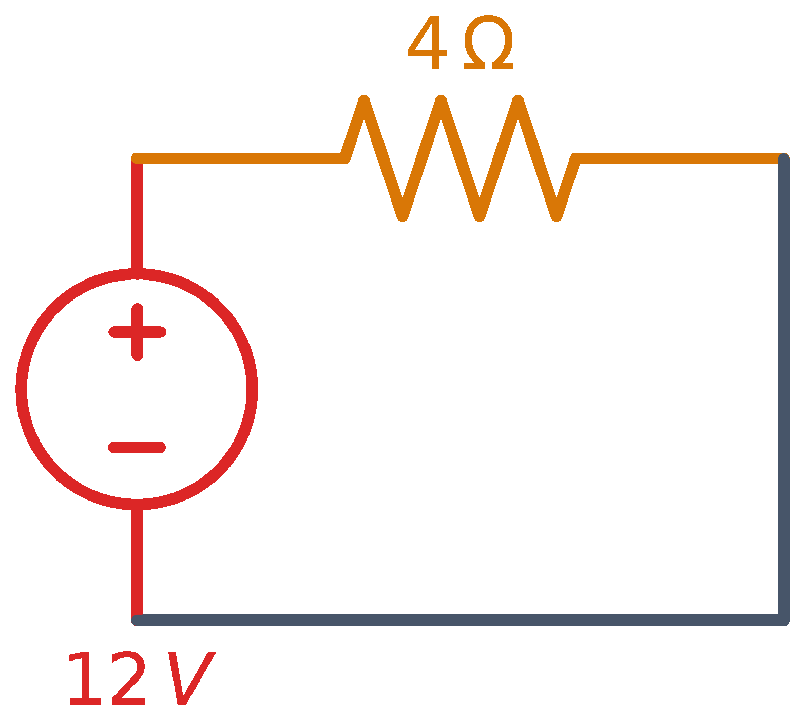
再深入一点：功率的四种符号组合
在关联方向下 p = vi。电压、电流各自可正可负，于是有四种组合；真正决定“吸收还是发出”的，只是乘积的符号，而不是电压或电流单独的正负。
| v | i | p = vi | 含义 |
|---|---|---|---|
| ＋ | ＋ | ＋ | 吸收 |
| ＋ | － | － | 发出 |
| － | ＋ | － | 发出 |
| － | － | ＋ | 吸收 |
无源元件要求对一切时刻都有 w(t) ≥ 0；有源元件只要求“能找到某一时刻 w < 0”，也就是它有能力净输出能量。电池放电时在发出，接上充电器时在吸收，但它仍然是有源元件。
w(t) = ∫−∞t p dτ = w0 + ∫0t p dτ
现实里：电费单
电费按“度”算，1 度 = 1 kWh = 1000 W 用 1 小时。功率乘时间就是能量；所以 100 W 的灯亮 10 小时，和 1000 W 的空调开 1 小时，电费一样。
两条铁律：KCL 与 KVL
元件有元件自己的脾气（电压电流关系），连接方式又强加了两条铁律。两者合起来，电路就“可解”了。
KCL 说的是电荷不会在节点上堆积；对任意画一个包围面也同样成立。KVL 说的是绕任意闭合回路走一圈，电压上升的总和等于下降的总和；由此还能得到“两点电压与路径无关”。
为什么这两条就够？因为未知量是每条支路的电压和电流，而元件关系给一半方程，KCL 和 KVL 给另一半。N 个节点只有 N−1 条独立 KCL，B 条支路只有 B−N+1 条独立 KVL。
再深入一点：KCL 的“包围面”与方程的数目
KCL 不只对一个节点成立，对任意画出的封闭面也成立：穿进这个面的电流总和，等于穿出它的电流总和。这个面可以包住好几个节点，甚至包住半个电路。
KVL 也有“路径形式”：从同一点出发、沿两条不同路径走到另一点，两条路径上的电压升之和相等。由此得到“两点电压与路径无关”，绕回路一周则升降相抵。
方程够不够？N 个节点只有 N−1 条独立 KCL；B 条支路只有 B−N+1 条独立 KVL。再加上每条支路自己的元件关系，正好凑齐 2B 个方程、2B 个未知量。
Σ v降 = 0
N−1 条 KCL
B−N+1 条 KVL
补遗：四条公理与适用边界
整本书的推导，最后都落在四条不加证明的假设上：
- 只通过端子打交道：元件之间除了端子电压、电流，没有别的“隔空”影响。
- 尺寸与方向无关：元件多大、怎么摆，都不影响行为。
- KCL：电荷不会在节点上堆积。
- KVL：回路里没有随时间变化的磁通。
这四条在低频、小尺寸下非常好用；频率高到波长与电路尺寸可比，或者电路大到一个城市那么大，就必须换成“分布参数/传输线”的语言。公理 3 也意味着这套理论不处理静电积累——那是另一门课的事。
现实里：家里的插座
墙上的插座是并联的：每个电器都拿到 220 V，互不影响。开关和灯是串联的：开关断开，电流无路可走。配电箱里的各路电流，最后都要满足 KCL。
等效与戴维南：把黑箱压成一个电池
两个子电路，只要端口上的电压—电流关系完全一样，对外就可以互换。等效只保证“对外一样”，内部可以完全不同。
- 串联：一条路走到底，电流相同，电压按电阻大小分。
- 并联：接在同一对节点上，电压相同，电流按电导（电阻的倒数）分。
- 电源变换：电压源串电阻，可以换装成电流源并同一个电阻，反过来也行。
- 叠加：每个独立源单独开工，其他源“下班”（电压源短路、电流源开路），结果相加。
戴维南定理说：任何线性二端网络，对外都能压成“一个电压源串一个电阻”。电压源是端口开路时量到的电压，电阻是内部独立源全部下班后从端口看进去的电阻。内部有受控源时，不能简单下班，要外加一个测试源去“问”。
为什么内阻等于负载时功率最大？
负载太小，电压几乎全落在内阻上；负载太大，电流又太小。两头都不讨好，中间有一个“甜点”。
这个甜点就是负载等于内阻。但此时内阻上也消耗同样多的功率，效率只有一半——“最大功率”不等于“最高效率”。
拖动左边的滑块，曲线上的圆点会跟着走。
再深入一点：电源变换、戴维南与诺顿是一家人
一个电压源串电阻，可以换装成一个电流源并同一个电阻，条件是 vs = R is，并且电流源的箭头要指向电压源的“＋”端。反过来也成立。
戴维南把任意线性二端网络压成“电压源串电阻”：v = voc + Req i。诺顿则压成“电流源并电阻”：i = v/Req − isc，其中 isc = voc/Req。求 Req 时独立源置零，但受控源必须保留；有受控源时用外加测试源去“问”。
负载等于内阻时功率最大：Pmax = voc²/(4Req)，但效率只有一半。置换定理、电源搬移，都是“保持端子关系不变”的拓扑手术。
v = voc + Reqi
isc = voc/Req
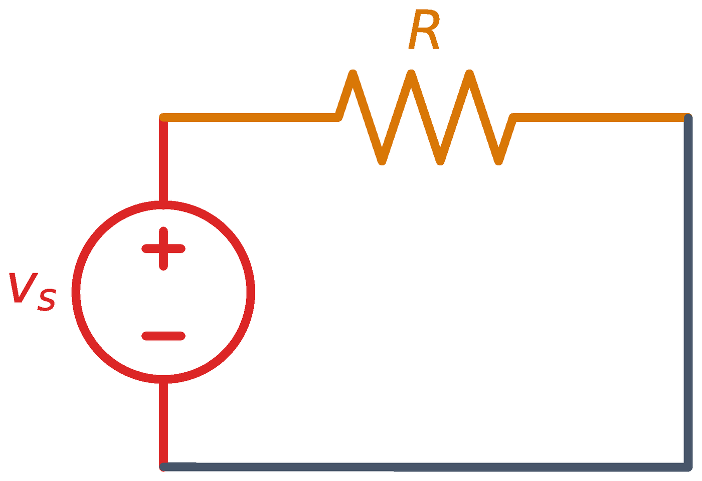
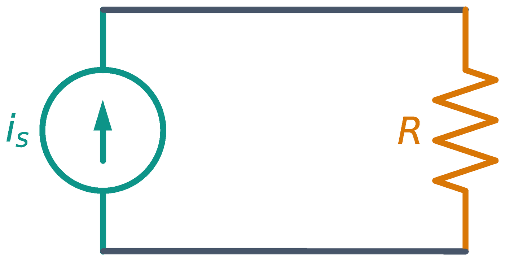
再补一张图：串联、并联与分压分流
串联是“一条路走到底”：两个电阻流过同一电流，电压按阻值正比分配。阻值越大，分到的电压越多；总电阻直接相加。
并联是“接在同一对节点上”：两个电阻承受同一电压，电流按电导正比分配。阻值越小，分到的电流越多；总电导直接相加。
分压、分流是电路分析里最常用的两个“心算工具”。但要记住：分压公式只在串联、且没有其他支路“分流”时成立；一旦接上负载，原来的分压比就被拉偏了。
v₂ = R₂/(R₁+R₂) · v
Geq = G₁ + G₂
i₁ = R₂/(R₁+R₂) · i
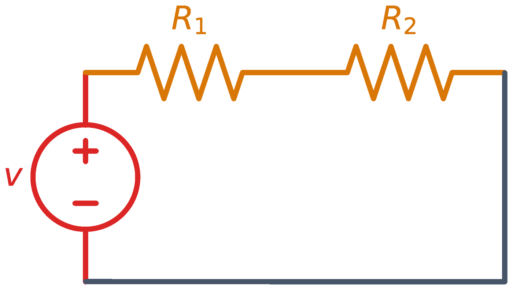
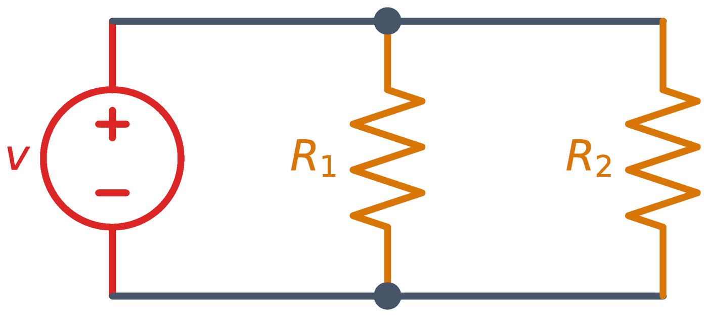
补遗：叠加、置换与电源搬移
- 叠加：每个独立源单独作用，其余电压源短路、电流源开路；受控源不能“下班”。叠加只对电压、电流成立，功率不行，因为功率是平方关系。
- 置换定理：已知某条支路的电压，就可以把它换成一个同值电压源；已知电流，就换成同值电流源。前提是电路有唯一解。
- 电源搬移：电压源可以沿节点“搬家”，电流源可以换到同一对节点之间的另一条路径上，只要搬完之后各端子的电压电流关系不变。
这三件事的共同点：都在“保持端口关系不变”的前提下做拓扑手术。做之前先问一句——我改的是外部关系，还是内部结构？
推导 · 分压公式从哪来
所以“分压”不是新定律，只是 KVL + 欧姆定律 + “同一电流”三件事合起来的结果。
推导 · 戴维南为什么总能压成“电池 + 电阻”
这就是戴维南定理：不是“近似”，而是线性叠加的必然结果。诺顿只是把同一式子两边除以 Req。
现实里：音量电位器与传感器
音量旋钮就是一个分压器：把输入信号分出一部分送给放大器。热敏电阻、光敏电阻也常接成分压器，把“温度/亮度”变成“电压”再送进芯片。
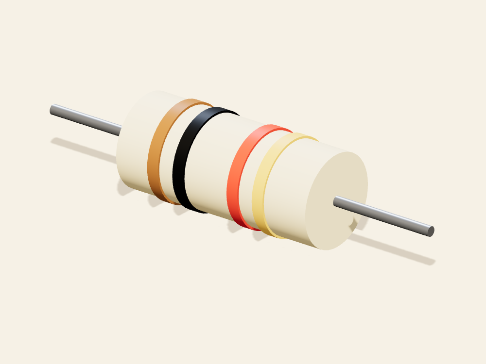
节点法与网孔法：让方程自己长出来
前面的等效靠“看图找结构”，不是每个电路都长得那么乖。节点法和网孔法是两个“必定能列方程”的通用办法。
- 选一个节点当参考点（0 V）。
- 对其余每个节点写一条 KCL：流出的电流之和为零。
- 每条支路电流用两端节点电压之差表示。
- 解方程，得到各节点电压，再求其他量。
电压源夹在两个非参考节点之间时，把这两个节点打包成超节点：对包围面写一条 KCL，再补一条“两节点电压差等于电源电压”。电压源一端接地时，那个节点的电压直接已知。
- 确认电路是平面电路（能画在纸上、导线不交叉）。
- 给每个“窗格”设一个顺时针的网孔电流。
- 绕每个窗格写 KVL。
- 解出网孔电流，再求支路电流和电压。
网孔电流是假想的环流，但每条支路电流都能用它表示；KCL 会自动满足，所以只需要 KVL。电流源夹在两个网孔之间时，合成超网孔：绕外圈写 KVL，再补一条电流约束。
怎么选？
节点少，用节点法；网孔少，用网孔法。含电流源多，节点法省事；含电压源多，网孔法省事。
含受控源时，先把它当独立源列方程，列完再“撕开”，把控制量代回去。矩阵不再对称，这是有源电路的特征。
再深入一点：超节点、超网孔与“观察法”
电压源夹在两个非参考节点之间，这两个节点的电压差被固定了。把它们打包成一个超节点：对包围面写一条 KCL，再补一条“两个节点电压之差等于电源电压”。电压源一端接地时，那个节点电压直接已知，连方程都不用写。
电流源夹在两个网孔之间，合成超网孔：绕外圈写一条 KVL，再补一条“两个网孔电流之差等于电流源电流”。
方程有固定的“形状”：节点矩阵对角是接在该节点的电导之和，非对角是负的互电导；网孔矩阵完全对偶。这就是观察法。含受控源时先贴住、列方程、再撕开，矩阵会失去对称。
Gii = ΣG
Gij = −ΣGij
（网孔对偶）
现实里：电路仿真软件
SPICE 这类软件内部做的事，就是替你列节点方程、解矩阵。你画的每一根线，最后都变成 Gv = i 里的一行。学会节点法，就看懂了仿真器的“心脏”。
再深入一点：节点方程与网孔方程是“数”出来的
节点法思路：选参考点，未知量是节点电压；对每个非参考节点写 KCL，支路电流用 (Vi − Vj)/R 表示。
(V2−V1)/R3 + V2/R4 = 0
按 V1、V2 合并同类项，就得到矩阵：
−(1/R3)V1 + (1/R3+1/R4)V2 = 0
这就是 Gv = i：对角线是接在该节点的电导之和，非对角线是负的互电导。
网孔法思路：未知量是网孔电流；对每个网孔写 KVL，公共支路的电流是两个网孔电流之差。
−R2i1 + (R2+R3+R4)i2 = 0
写成 Zi = v：对角线是网孔自阻，非对角线是互阻的负值。
对偶：节点法数“流出的电流”，网孔法数“绕圈的电压”；G ↔ R，v ↔ i，KCL ↔ KVL。
受控源与运放：会“听指挥”的元件
独立源自己说了算；受控源听别处的电压或电流指挥。它让电路第一次有了“放大”和“负电阻”这些本事。
- VCVS：电压控制电压源，系数是无量纲的电压增益。
- VCCS：电压控制电流源，系数是跨导。
- CCVS：电流控制电压源，系数是转移电阻。
- CCCS：电流控制电流源，系数是电流增益。
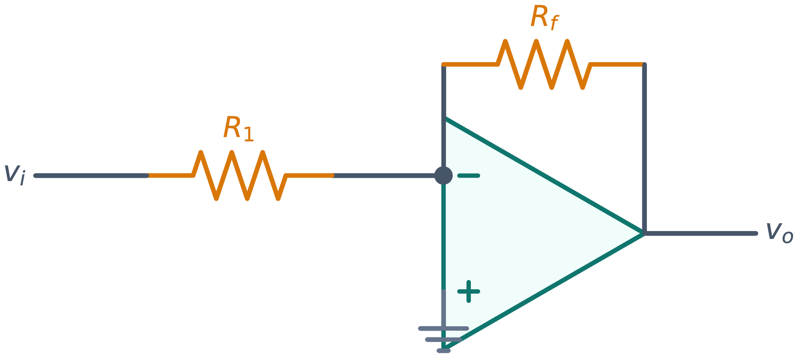
虚短与虚断：理想运放增益无穷大，加上负反馈后，两个输入端电压几乎相等（虚短），且几乎不取电流（虚断）。反相放大时，反相端几乎是 0 V，叫“虚地”。
反馈：把输出送回输入端。负反馈用增益换带宽、线性度和阻抗；正反馈太强会自激。判断稳定要看环路增益：绕一圈既不衰减、相位又转满一圈，就会振荡。
二极管与三极管：本质非线性。工程上的办法是“小信号”：在直流工作点画一条切线，把曲线当直线，再用线性电路的方法分析变化量。
再深入一点：四种受控源与“贴住—撕开”
受控源有四种：电压控制电压源（VCVS，系数 μ 无量纲）、电压控制电流源（VCCS，系数 gm 是跨导）、电流控制电压源（CCVS，系数 rm 是转移电阻）、电流控制电流源（CCCS，系数 β 是电流增益）。
分析时先把受控源“贴住”，当成独立源列方程；列完再“撕开”，把它的值用控制量替换，控制量用节点电压或网孔电流表示，代回去解。含受控源时矩阵不再对称，这是有源电路的标志。
受控源还能造出负电阻：让 CCVS 的控制量取自身端电流，得到 v = −2i，端口功率 p = −2i² 恒为负，确实在向外供能。它不是永动机，只是有源电路在小信号下的等效。
运放是“增益无穷大的 VCVS”。有限增益时 vo = μ(v+ − v−)；μ → ∞ 且负反馈时，v+ = v−（虚短），输入端不取电流（虚断）。
ic = gm vx
vc = rm ix
ic = β ix
再补一张图：积分器与微分器
把反相放大器的输入电阻换成电容，就成了积分器：输入电流给电容充电，输出与输入的积分成正比。它的 s 域增益是 −1/(sRC)，在频域里是一条 −20 dB/十倍频的斜线，相位恒为 90°。
把反馈电阻换成电容、输入保留电阻，就成了微分器：输出与输入的变化率成正比，s 域增益是 −sRC，频域斜率 +20 dB/十倍频。
积分器会“记”住历史，常用于滤波、控制和模拟计算；微分器会放大高频噪声，实际电路里往往要串一个小电阻限制高频增益。
vo = −(1/RC)∫vidt
微分器：H(s) = −sRC
vo = −RC dvi/dt
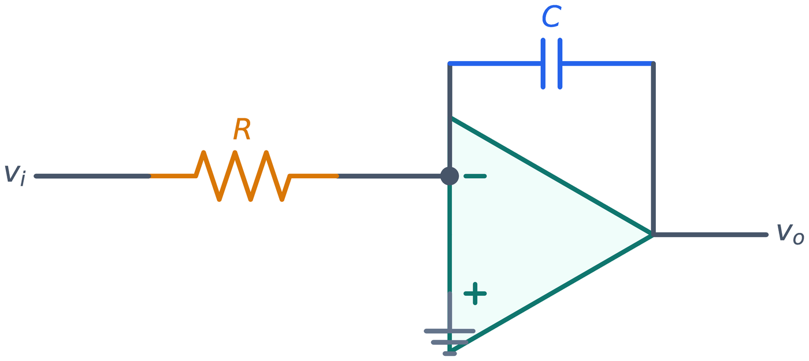
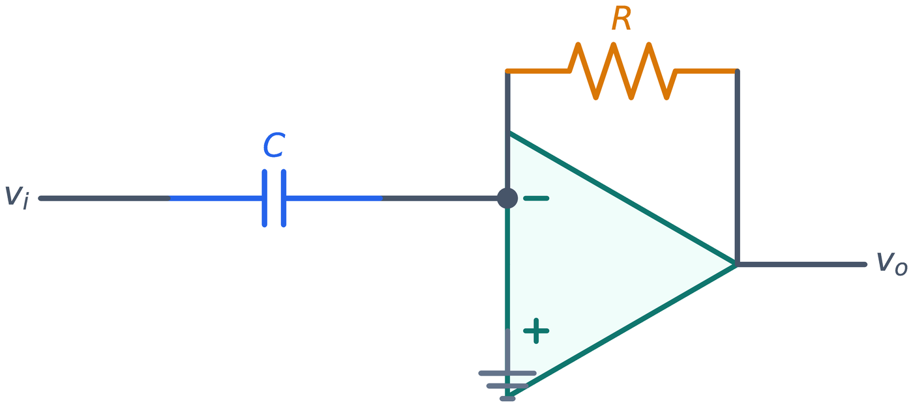
推导 · 反相放大器的增益
负号来自“电流流进虚地再流出去”的方向；增益大小只由两个电阻之比决定，和运放本身的开环增益几乎无关——这正是负反馈的魔力。
现实里：麦克风前置放大
麦克风输出的信号只有几毫伏，必须先放大再处理。反相/同相放大器就是最常用的“第一级”。虚短让增益只取决于电阻，温度、批次差异都被反馈“压住”了。
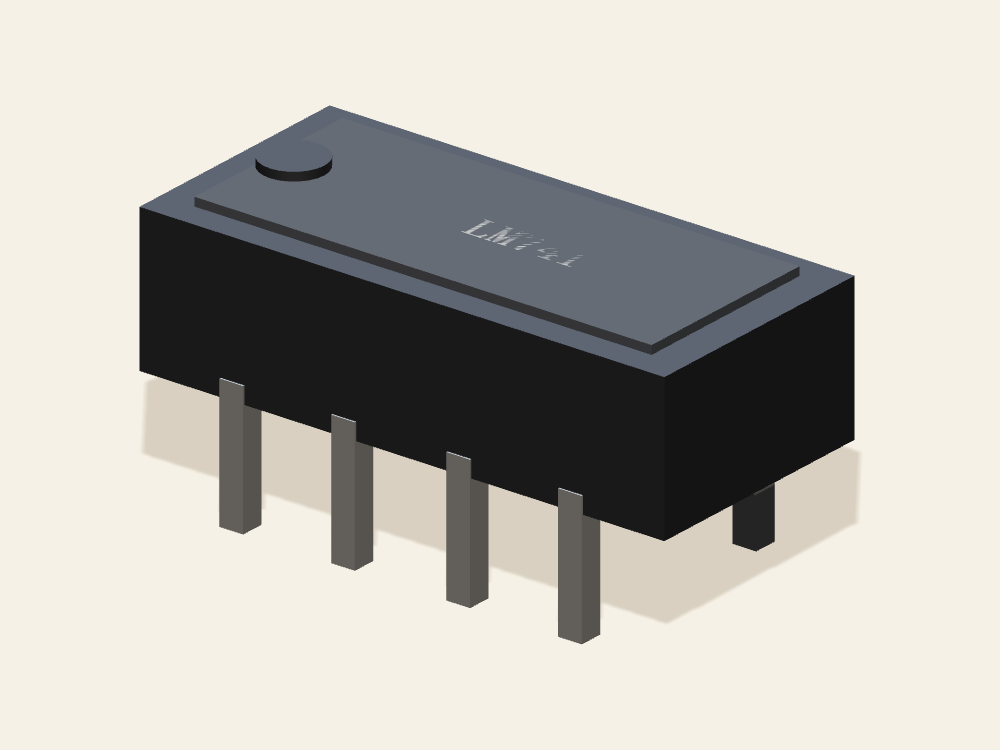
电容与电感：电路的“记忆”
电阻是“现在”的元件，电压电流随时成正比；电容和电感会“记住”过去，因为它们把能量存了起来。
电容：储水罐
存电荷，电荷 = 电容 × 电压。电流 = 电容 × 电压变化率。
电压变化越快，电流越大；电压不变（直流稳态），电流为零，相当于开路。
只要电流有限，电容电压不能瞬间跳变。能量储在电场里。
电感：飞轮
存磁链，磁链 = 电感 × 电流。电压 = 电感 × 电流变化率。
电流变化越快，电压越大；电流不变（直流稳态），电压为零，相当于短路。
只要电压有限，电感电流不能瞬间跳变。能量储在磁场里。
换路：开关动作的一瞬间，电路分成“动作前”和“动作后”。先用动作前的电路求电容电压、电感电流（它们不能跳），再把电容换成同值电压源、电感换成同值电流源，去解动作后的电路。这个“替代”动作，就是常说的 0⁻ 到 0⁺。
再深入一点：电容与电感的“对偶”
电容的“状态量”是电压：q = Cv，i = C dv/dt。只要电流有限，电压就不能跳；直流稳态时电流为零，电容相当于开路。能量储在电场里。
电感的“状态量”是电流：λ = Li，v = L di/dt。只要电压有限，电流就不能跳；直流稳态时电压为零，电感相当于短路。能量储在磁场里。
串并联的规律正好“反过来”：电容像电导一样相加（并联相加），电感像电阻一样相加（串联相加）。突然把两个电容并联、或把电感支路断开，会出现冲激，状态量会跳变。
v = L di/dt
补遗：串并联、直流稳态与相容单位
- 电容：并联相加（像电导），串联取倒数和；分压时大电容分到小电压。
- 电感：串联相加（像电阻），并联取倒数和；分流时大电感分到小电流。
- 直流稳态：电容开路、电感短路；但“短路”上的电流、“开路”上的电压由外电路决定，不能凭空分配。
- 相容单位：kΩ 配 mA 配 V，μF 配 μs，MΩ 配 μA。配套之后数字直接相乘，少写一堆 10 的幂。
两个并联电感被电流源驱动时，直流等效只给出“总电流”，分配要靠磁链相等（λ₁ = λ₂）或“缓慢升流”的极限来定；两个串联电容被隔离时，电荷相等（q₁ = q₂）。这类“奇异稳态”是考试里最容易漏的地方。
推导：½Cv² 和 ½Li² 的“½”从哪来
思路：功率是能量对时间的导数，p = vi；把元件的 v-i 关系代进去，对时间积分即可。
这里用了换元 dv = (dv/dt)dt。图形上，v 从 0 升到 V 时，三角形面积就是 ½CV²。
电感同理：
“½”不是魔法，是三角形面积；能量存进电场或磁场，撤掉源以后还能放出来。
现实里：闪光灯与继电器
相机闪光灯先把电荷慢慢存进大电容，再瞬间放出，得到很强的闪光。继电器线圈是电感，断电瞬间电流想继续流，会在触点间打出火花——这就是“电感反峰电压”。
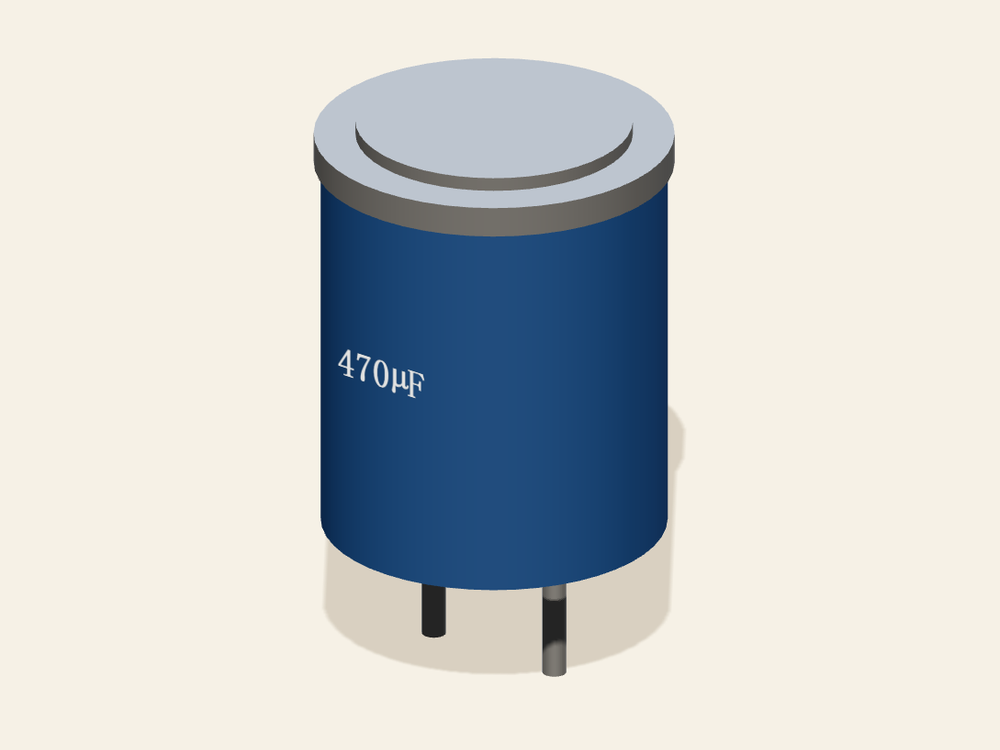
一阶电路：指数式地靠近
只含一个储能元件的电路，响应通常按指数规律靠近终值。它不会“嗖”地到位，而是越靠近越慢。
三要素法
一阶电路只要知道三样东西，就能直接写答案：
- 初值：换路后一瞬间的值，用 0⁺ 电路求。
- 终值：时间足够长以后的值，电容开路、电感短路。
- 时间常数：从储能元件两端看出去的等效电阻，配上 C 或 L。
响应 = 终值 +（初值 − 终值）× 衰减指数。
经过一个 τ，走完约 63%；经过五个 τ，基本到位。
低通与高通：同一个 RC 电路，从电容看是低通（低频过、高频挡），从电阻看是高通（直流挡、跳变过）。截止频率是增益降到 0.707 倍的地方。
再深入一点：低通、高通与“三要素”
RC 低通取电容电压：H(jω) = 1/(1 + jωRC)，截止频率 ωc = 1/RC。过了截止点，频率每升高十倍，增益下降 20 dB。RC 高通取电阻电压：H(jω) = jωRC/(1 + jωRC)，低频被挡住。
更一般的一阶方程是 (p + a)y = (bp + c)x，极点 −a 决定时间常数 τ = 1/a，零点只改变波形的“配比”。
三要素：初值 y(0⁺)、终值 y(∞)、时间常数 τ。把三者代入指数式，就是全响应。τ 要用“从储能元件看出去”的等效电阻来算。
ωc = 1/RC
y(t) = y(∞) + [y(0⁺) − y(∞)]e−t/τ
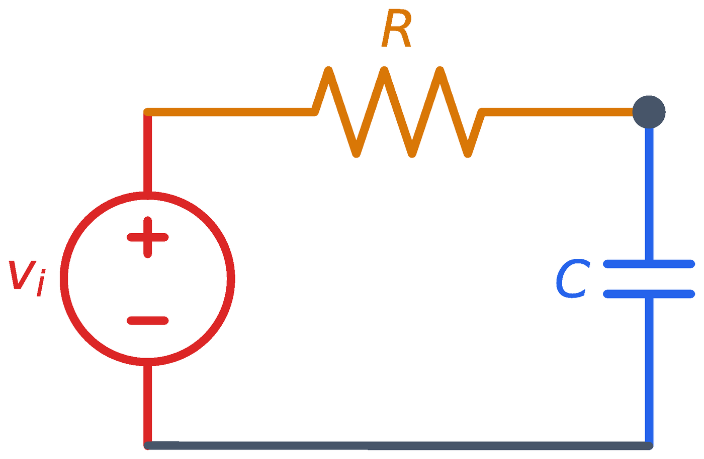
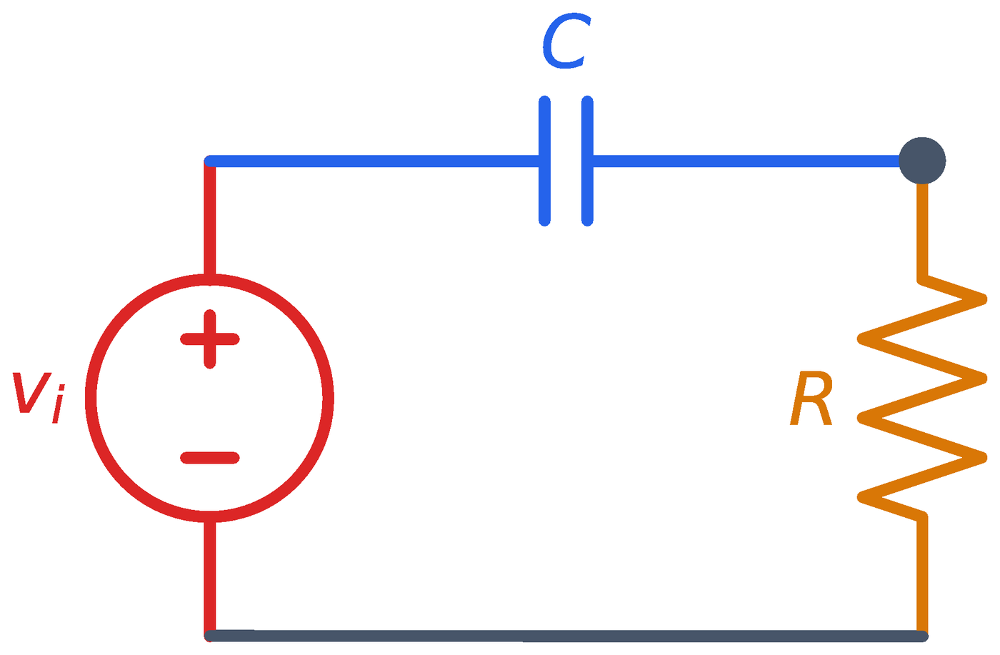
再补一张图：RL 电路与“飞轮”
RL 电路和 RC 是“对偶”的：电容记电压，电感记电流；RC 的时间常数是 RC，RL 的时间常数是 L/R。
开关合上，电感电流从零慢慢爬向终值；开关断开，电感为了维持电流，会在两端产生很高的反向电压——这就是继电器、点火线圈和“关断过电压”的来源。
直流稳态时电感相当于短路，电流由外电路决定；分析换路时，电感电流不能跳，要用它作为 0⁺ 电路的初始条件。
i(t) = i(∞) + [i(0⁺) − i(∞)]e−t/τ
vL = L di/dt
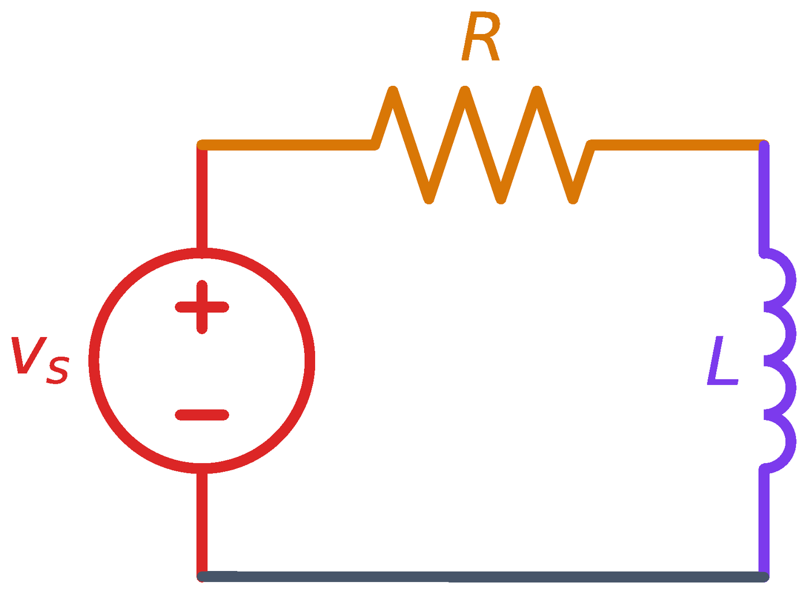
补遗：一般一阶、有源一阶与真实元件
- 一般一阶：(p + a)y = (bp + c)x。分母的根 −a 定时间常数，分子的零点只改“直通”和“配比”。
- 有源一阶：受控源参数进入分母，可能让 a 变号：a > 0 稳定，a = 0 临界，a < 0 发散。
- 仿真图：用积分器、加法器、比例器搭方程；尽量不用微分器，因为它放大高频噪声。
- 真实元件：电容有漏电阻，电感有绕线电阻，电阻有寄生电容。模型只在关心的频率、时间尺度内“够用”。
一阶电路的“快慢”全写在 τ 里；而 τ 只由电路自身参数决定，和输入大小无关。这是它最好用的地方。
推导 · RC 充电曲线是怎么解出来的
τ = RC 不是“背下来的”，而是微分方程里指数项的系数；它决定“多快走完 63%”。
现实里：按键去抖与闪光充电
机械按键按下时会“抖”出好几个脉冲，常用 RC 低通把它磨平。闪光灯“充多久能闪”也由 RC 时间常数决定：电容越大、电阻越大，等得越久。
二阶电路：三种“脾气”
电容想维持电压，电感想维持电流。两个一起上，就会“打架”：有的电路慢慢爬，有的刚好不振荡，有的会冲过头再荡回来。
三种阻尼
- 过阻尼：阻尼很大，慢慢爬向终值，不振荡。
- 临界阻尼：刚好不振荡，是不振荡里最快的。
- 欠阻尼：冲过终值，来回振荡，慢慢衰减。
Q 越大，阻尼越小，振荡越明显、持续越久；Q = 0.5 时正好临界。
极点决定响应的形状：全在左半平面就稳定；有极点在右半平面，响应会越来越大。
Q = ω0 / (2α)
高阶电路可以拆成若干“简单项”之和，每一项对应一个极点；极点定形状，零点只改比例。拆项的方法叫部分分式展开，拆完查表就能回到时间域。
Routh 算法：不想解高次方程时，把系数排成表，数第一列变号几次，就知道有几个右半平面根，从而判断稳定。
再深入一点：二阶的“标准形”
二阶低通的标准形是 H(s) = ω0²/(s² + 2ζω0s + ω0²)。ζ 是阻尼比：ζ > 1 过阻尼，ζ = 1 临界，ζ < 1 欠阻尼。
串联 RLC 中，自然频率、阻尼比与 Q 的关系由下面这组公式给出。电阻越大，阻尼越大，振铃越少，但响应越慢。
二阶响应可以拆成两个一阶项（过阻尼）、一个重根项（临界）或一对共轭项（欠阻尼）。极点全在左半平面就稳定；Routh 算法只数第一列变号，就能判断右半平面根有几个。
ω0 = 1/√(LC)
ζ = (R/2)√(C/L)
Q = ω0L/R
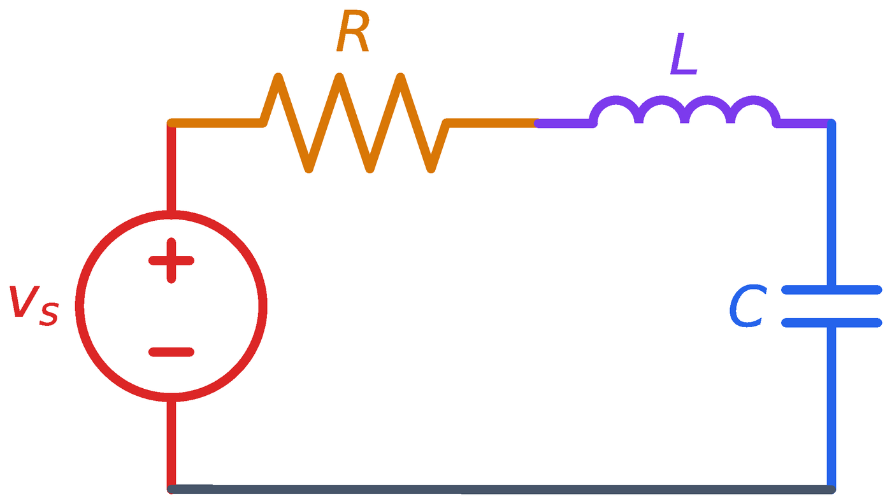
补遗：部分分式与 Routh 判稳
- 部分分式：真分式才能直接拆；分子次数不低于分母时，先做长除。单根用留数（覆盖法），重根要配合求导，共轭复根可合并成“二次分母 + 一次分子”。
- 极点与响应：实极点给指数，重极点给“t 乘指数”，共轭极点给衰减振荡。零点只改系数，不改“形状”。
- Routh：把系数排成表，第一列变号几次，就有几个右半平面根。第一列出现零、或整行为零时，要乘 (s + a) 或用导数行替换。
稳定的判据只看极点，不看零点；临界稳定要求虚轴上的极点都是一阶的。
推导 · RLC 的阻尼比从哪来
电阻越大，ζ 越大，越不容易振；电感越大、电容越大，ω₀ 越低，振荡越慢。
现实里：音箱分频器与汽车悬挂
音箱里的 LC 网络把高音、低音分到不同喇叭；设计不好就会在分频点“振铃”。汽车悬挂是同一个二阶方程：弹簧定 ω₀，减震器定 ζ，太软会晃、太硬会颠。
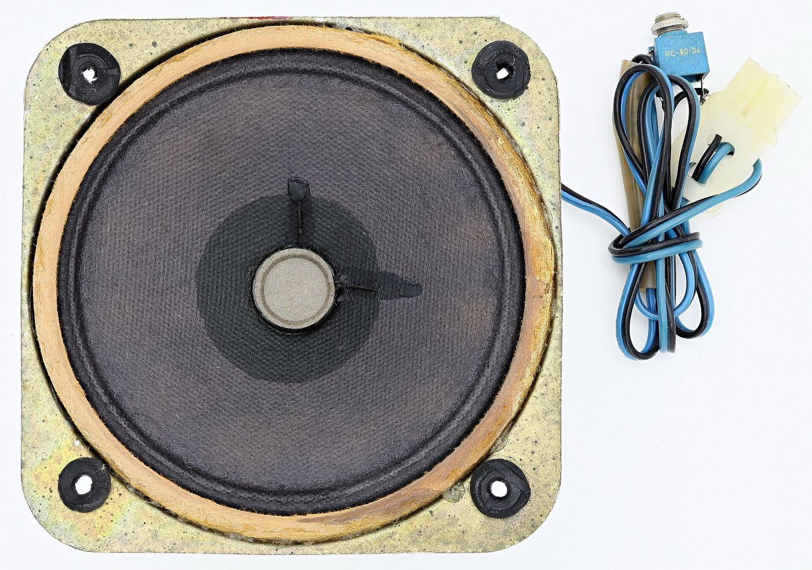
相量：给正弦拍一张“快照”
第 09 节我们解的是微分方程，关心的是“从换路到稳定”的全过程。可如果激励本来就是正弦，而且我们只关心长期剩下的那部分，还需要每次列微分方程吗？这一节只解决一件事：把正弦稳态变成复数代数。
一个正弦量由三要素决定：幅值 Vm、角频率 ω、初相 θ。频率通常由源决定，所以“求响应”实际只求幅值和相位两个数。
先看结论：阻抗是“复数版电阻”
- 电阻：阻抗是实数 R，电压与电流同相。
- 电感：阻抗是 jωL，电压超前电流 90°。
- 电容：阻抗是 1/(jωC)，电压滞后电流 90°。
有了阻抗，欧姆定律、KCL、KVL、节点法、网孔法、戴维南全部照搬，只是实数换成复数。
ZL = jωL
ZC = 1/(jωC)
但先别急着记。下面从“为什么稳态仍是正弦”开始，把这条结论一步步推出来。
一、正弦稳态：为什么只看“剩下”的那部分
设线性电路由正弦源驱动：
电路里有 R、L、C，列出来是常系数线性微分方程。它的完全解由两部分组成：
暂态解是齐次方程的通解，由特征根决定：稳定电路（特征根不在 jω 轴上）里它一定衰减。稳态解是特解，由外加源“逼”出来。关键问题是：这个特解长什么样？
思路：先猜形式，再代回验证。因为方程是线性的、源是频率 ω 的正弦，猜特解也是同频正弦，只是幅值和相位待定：
把它代回微分方程。求导只会把 cos 变成 sin、再变回 cos，频率始终是 ω；方程两边同频，比较 cos 和 sin 的系数，就能解出 A 和 φ。线性方程的特解唯一，所以这就是稳态解。
这就是相量法能成立的根本原因：我们不需要求整个时间函数，只需要求两个数——幅值 A 和相位 φ。
二、把正弦装进复指数：相量的定义
直接比较 cos 和 sin 的系数很啰嗦。欧拉公式给了一个更省事的容器：
于是余弦可以写成复指数的实部：
把与时间无关的部分单独拎出来，定义相量：
v(t) = Re{ V ejωt }
V 是一个复数：模是幅值 Vm，辐角是初相 θ。它不是新的物理量，只是“幅值 + 相位”的打包写法。相量图里画成箭头，长度表示幅值，角度表示相位。
相位差定义为 φ = θv − θi。φ > 0 说电压超前电流，φ < 0 说电压滞后电流；相量图上就是两个箭头的夹角。阻抗角正是这个 φ。
推导 · 为什么求导只乘 jω
同理，积分对应除以 jω。微分方程里的 d/dt 全部变成乘 jω，微分方程就变成了复数代数方程。
把这条性质与线性性结合起来，就得到相量法的三条基本规则：
| 时域 | 相量域 | 原因 |
|---|---|---|
| a·v(t) | a·V | 线性 |
| v₁(t) + v₂(t) | V₁ + V₂ | 线性 |
| dv/dt | jωV | 复指数求导 |
| ∫v dt | V/(jω) | 复指数积分 |
三、阻抗：把 R、L、C 都变成复数
定义阻抗为相量电压与相量电流之比：
它是复数，模是电压电流幅值之比，辐角是电压超前电流的相位。三个元件分别推一遍：
推导 · 电阻
推导 · 电感
推导 · 电容
| 元件 | 阻抗 Z | 模 | 相位 |
|---|---|---|---|
| 电阻 | R | R | 0° |
| 电感 | jωL | ωL | +90°（电压超前） |
| 电容 | 1/(jωC) | 1/(ωC) | −90°（电压滞后） |
阻抗的倒数叫导纳 Y = 1/Z。串联用阻抗相加，并联用导纳相加；这和电阻串并联完全同构，只是运算变成复数。
补一层：导纳与相量图
阻抗的倒数是导纳：
其中 G 是电导、B 是电纳。注意：有电抗时，G 不等于 1/R，B 也不等于 1/X，必须用复数除法：
G = R/(R² + X²)
B = −X/(R² + X²)
例：Z = 3 + j4 Ω，则 Y = (3 − j4)/25 = 0.12 − j0.16 S。串联用 Z 相加，并联用 Y 相加；这和电阻串并联完全同构。
相量图一般选电流为参考相量，把它画在 0°：
- 电阻电压 VR 与 I 同相；
- 电感电压 VL 超前 I 90°；
- 电容电压 VC 滞后 I 90°；
- KVL 变成“首尾相接的矢量加法”。
串联 RLC 中，VL 与 VC 方向相反，谁大谁决定电路呈感性还是容性：
VL < VC → 容性
VL = VC → 谐振
相量图不是“装饰”，它能直接看出相位差、幅值关系和谁超前谁。
四、相量形式的电路定律：把直流配方整套搬过来
KCL 和 KVL 是线性约束，对复指数取实部不改变等式，所以：
Σ Vk = 0 （KVL）
欧姆定律变成 V = ZI；串联、并联、分压、分流、节点法、网孔法、戴维南、叠加，全部保持原来的形式，只要把 R 换成 Z、把实数换成复数。这就是相量法最省事的地方：不用重新学一套电路分析。
例题：RL 串联
设 R = 3 Ω，ωL = 4 Ω，电压相量 V = 10∠0° V。求电流和各元件电压。
思路：先求总阻抗，再欧姆定律，最后用分压或 V=ZI 求各段。
I = V/Z = 10∠0° / 5∠53.13° = 2∠−53.13° A
电阻电压与电流同相：
电感电压超前电流 90°：
检查 KVL：
回到时域（ω 已知）：
vR(t) = 6 cos(ωt − 53.13°) V
vL(t) = 8 cos(ωt + 36.87°) V
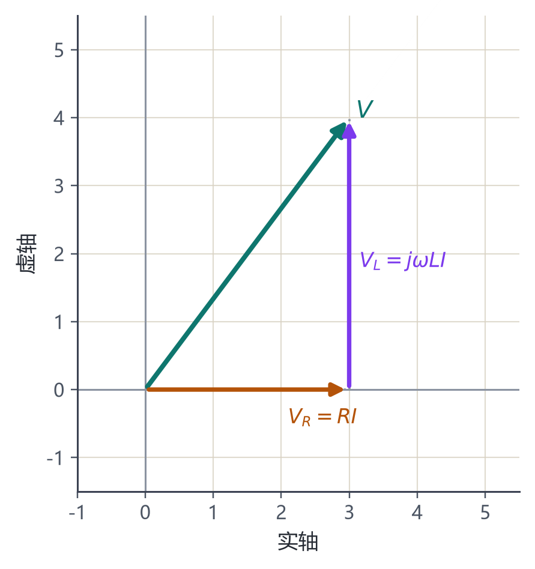
五、节点法、网孔法与戴维南：配方不变，数变复数
节点法：对每个节点写 KCL，支路电流用 (Vi − Vj)/Z 表示，得到复数矩阵 G·V = I。网孔法：对每个网孔写 KVL，得到 Z·I = V。戴维南：开路电压 Voc、等效阻抗 Zeq，负载电流 I = Voc/(Zeq + ZL)。
需要注意的只有两件事：第一，Z 依赖频率 ω，换频率就要重算；第二，含受控源时矩阵不再对称，但解法不变。
六、谐振与 Q：虚部抵消之后
串联 RLC 的阻抗是：
当感抗与容抗相等时，虚部为零：
此时 Z = R，电流最大；L 和 C 的电压大小相等、方向相反，互相抵消，但各自可能远大于源电压。这就是串联谐振的“电压放大”。
把阻抗写成归一化形式，能看清 Q 的作用：
Q = ω0L/R = 1/(ω0CR)
推导 · 带宽为什么是 ω₀/Q
Q 越高，带宽越窄，选择性越好；但储能元件的建立时间也越长，这就是“选得准”和“变得快”的取舍。
再深入一点：Q 的物理意义与并联谐振
Q 不只出现在公式里。它的定义是：
串联时，电流相同，能量在 L、C 之间来回倒；R 每个周期拿走一部分，所以 Q = ω0L/R。Q 高，意味着“存得多、耗得少”，振铃更久。
并联谐振是对偶的：端电压相同，L、C 支路电流等幅反相，总电流最小。用导纳写：
ω0 = 1/√(LC)
Q = R/(ω0L) = ω0CR
串联看阻抗最小，并联看导纳最小；一个“电流最大”，一个“端电压最大”。
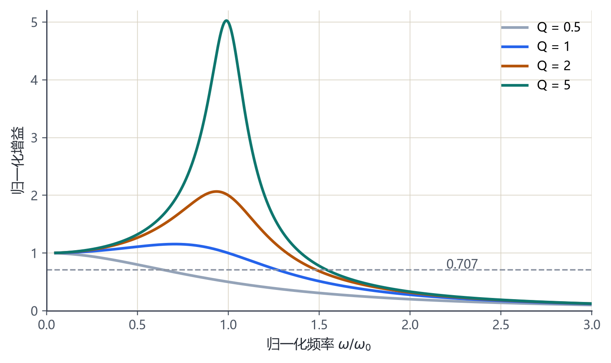
七、从相量到功率、再到频响
相量法解决的是“同一个频率下的幅值和相位”。下一节功率会用到它：把电压相量乘以电流的共轭，就得到复功率 S = V I* = P + jQ。再往后，频率响应把 ω 当作变量扫过去，Z(jω) 就变成了网络函数 H(jω)。
所以这条线是连贯的：
现实里：收音机调台
旋转调台旋钮，其实是在改变电容值，让 LC 的谐振频率对准某个电台。电台频率不同，LC 对其他频率“不感兴趣”，这就是选择性的来源；而 Q 越高，选台越尖，但音质和建立时间也会受影响。
交流功率：有功、无功与功率因数
正弦电压电流的瞬时功率一直在脉动。一个周期平均下来，只有电阻真正消耗功率；电感和电容只是把能量“借走再还回来”。
三个功率
- 有功 P：真正被消耗的，单位 W。
- 无功 Q：在 L、C 之间来回跑的，单位 var。
- 视在 S：电压有效值乘电流有效值，单位 VA，是设备的“容量占用”。
功率因数是电压与电流相位差的余弦。功率因数低，线路电流就大，设备和导线都要加粗，所以电力公司要罚款。
校正：在感性负载旁并联电容，用容性无功抵消感性无功，功率因数就上去了，线路电流反而变小。
S = P + jQ
再深入一点：瞬时功率、无功与复功率
设 v = Vmcos(ωt)，i = Imcos(ωt − φ)，瞬时功率可以拆成两块：一块是不随时间变的平均功率，一块是以 2ω 频率脉动的部分。
平均功率 P = VrmsIrmscosφ；无功功率 Q = VrmsIrmssinφ；视在功率 S = VrmsIrms。三者满足 S² = P² + Q²，画出来就是功率三角形。
无功不是“白干的活”，它在电感、电容之间来回搬运，不消耗但有占线路容量。并联电容做功率因数校正，就是把感性无功抵消掉，让线路电流降下来。
P = VIcosφ
Q = VIsinφ
S = P + jQ
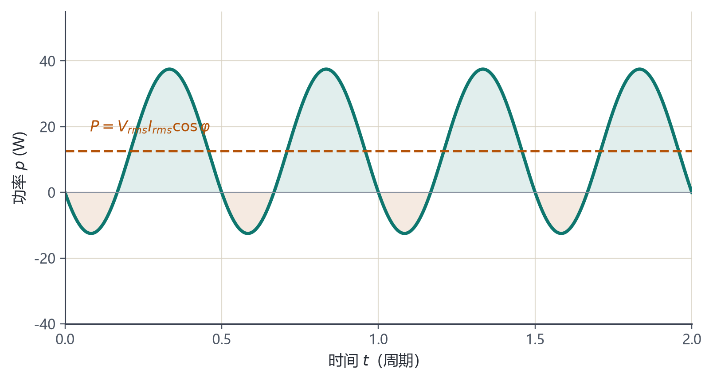
补遗：功率因数校正与共轭匹配
- 感性负载的电流滞后电压，功率因数低；在负载端并联电容，用容性无功去抵消感性无功，总电流会下降。
- 不要“过补偿”：电容太大，电流又会从滞后变超前，线路电流反而回升。
- 源有内阻抗时，负载取内阻抗的共轭，拿到的有功最大；只让电阻相等、电抗不抵消，是拿不到最大功率的。
功率因数校正省的是“线路容量”，不是“负载消耗的有功”。电费里的有功部分不会因为并联电容而减少。
推导：瞬时功率怎么拆成“平均 + 2ω 脉动”
设 v = Vmcos(ωt)，i = Imcos(ωt − φ)。用积化和差：
再把 cos(2ωt − φ) 展开，并令 V、I 为有效值：
P = VIcosφ，Q = VIsinφ
前两项是平均功率和以 2ω 脉动、平均为零的分量；第三项是“来回搬运”的无功分量。电流滞后时 Q > 0，波形在平均线上下不再对称。
再深入一点：复功率与最大功率传输
用有效值相量定义复功率：
P = Re{S} = VIcosφ
Q = Im{S} = VIsinφ
其中 I* 是电流的共轭。只有电阻消耗有功；电感、电容的无功会来回搬运，不消耗，但占用线路容量。
负载从有内阻抗的源拿最大有功，条件是共轭匹配：
RL = Rs，XL = −Xs
Pmax = |Voc|²/(4Rs)
只让电阻相等、电抗不抵消，拿不到最大功率；只让模相等，也不对。
共轭匹配时，源内阻和负载电阻各消耗一半有功，所以效率只有 50%。这不是“最省电”的匹配，而是“负载拿到最多有功”的匹配。
电力系统追求的是高效率，不会故意让线路阻抗等于负载；只有小信号、通信、音频等“要最大功率”的场合才做共轭匹配。
共轭匹配时 η = 50%
如果负载电抗不可调，只能调电阻，最大功率条件会变成 RL = |Zs|，而不是 Rs。
现实里：工厂的无功补偿柜
工厂里大量电机是感性负载，功率因数低，线路电流大、电费高。并联电容柜把无功“就地补掉”，线路电流降下来，同样的有功可以用更细的线送——这就是功率因数校正。
频率响应与滤波：电路对不同频率的态度
固定电路，改变输入正弦的频率，看输出幅度和相位怎么变——这就是频率响应。滤波器就是一只“筛子”。
四种筛子
- 低通：低频过，高频挡。
- 高通：高频过，低频挡。
- 带通：只放行中间一段。
- 带阻：只挡掉中间一段（陷波）。
谐振电路的带宽是“增益不低于 0.707 倍”的频率范围。带宽等于谐振频率除以 Q：Q 越高，带宽越窄，选择性越好，但建立越慢、越容易振铃。
Bode 图把增益取对数、频率也取对数：串联环节的增益相乘，变成相加；每个极点、零点在转折频率处改变一次斜率。
再深入一点：四种滤波器与 Bode 渐近线
频率响应 H(jω) 同时给出两件事：幅度怎么变（增益）、相位怎么移。把增益取 20log，频率取对数，就得到 Bode 图；每个极点在高频段贡献 −20 dB/十倍频，每个零点贡献 +20 dB/十倍频。
一阶低通的转折点在 ωc = 1/RC，转折点本身是 −3 dB；一阶高通正好相反。带通只放行中间一段，带阻只挡掉中间一段。谐振电路的带宽 B = ω0/Q，Q 越高越“挑食”。
有源滤波用运放加 RC，避开电感；但运放有增益带宽积 GBW 的限制：闭环增益越大，可用带宽越窄。
一阶低通：−20 dB/dec
B = ω0/Q
GBW = A0ωa
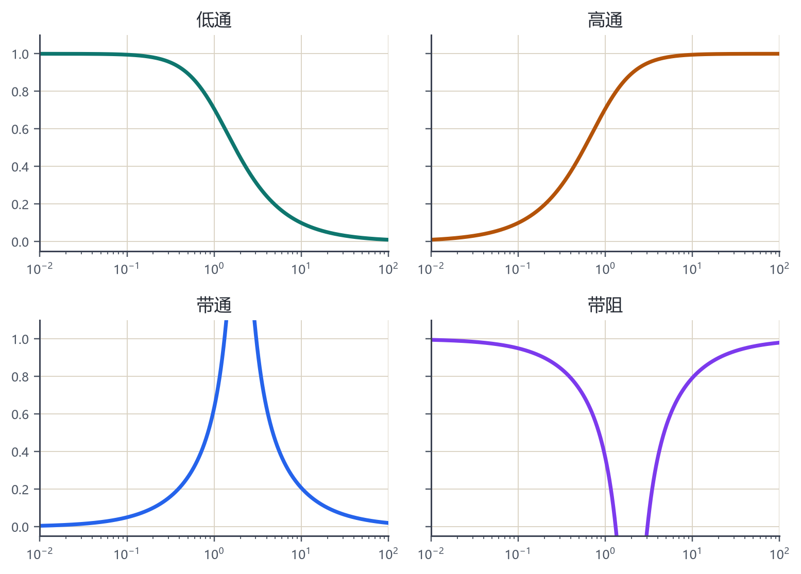
推导：一阶低通的 H(jω)、截止频率与 −20 dB/dec
思路：把电容换成阻抗，用分压公式；再把结果写成“模 + 相位”。
ZC = 1/(jωC)
代入并上下同乘 jωC：
令 ωc = 1/(RC)，则：
|H| = 1/√(1 + (ω/ωc)²)
φ = −arctan(ω/ωc)
当 ω = ωc 时 |H| = 1/√2 ≈ 0.707，所以叫 −3 dB 点；当 ω ≫ ωc 时 |H| ≈ ωc/ω，频率乘 10，幅度除以 10，即 −20 dB/dec。
这就是 Bode 图斜率的来源：一个极点贡献 −20 dB/dec，一个零点贡献 +20 dB/dec。
再深入一点：网络函数与串、并联谐振
网络函数是响应相量与激励相量之比：
按响应、激励是电压还是电流，分为四类：电压增益、电流增益、转移阻抗、转移导纳。分母中 jω 的最高次数就是网络阶数；分母的根是极点，分子的根是零点。
- 策动点：同一端口，输入阻抗或输入导纳。
- 转移函数：跨端口，电压/电流增益或转移阻抗/导纳。
- 极点：让 H→∞ 的 s 值，决定稳定与响应形状。
- 零点：让 H=0 的 s 值，只改比例与波形。
串联 RLC 的阻抗：
ω0 = 1/√(LC)
Q = ω0L/R
谐振时 Z=R，电流最大；L、C 电压大小相等、方向相反，各自是源电压的 Q 倍。带宽 B=ω0/Q。
并联谐振是对偶的：端电压相同，L、C 支路电流等幅反相，总电流最小。
ω0 = 1/√(LC)
Q = R/(ω0L) = ω0CR
并联谐振时导纳最小、端电压最大；L、C 支路电流是总电流的 Q 倍。串联看“电压放大”，并联看“电流放大”。
Bode 图把增益取 20log、频率取对数：一个极点贡献 −20 dB/dec，一个零点贡献 +20 dB/dec；转折频率处是 −3 dB。
一阶低通：ωc = 1/(RC)
B = ω0/Q
滤波器的“陡不陡”由阶数决定：一阶 −20 dB/dec，二阶 −40 dB/dec；但阶数越高，相位滞后越大，也越容易振铃。
现实里：耳机的分频与降噪
入耳式耳机常用 RC/LC 分频，把低频送大喇叭、高频送小喇叭。降噪耳机则用麦克风采噪声，反相后叠加，把低频噪声“抵消”——本质是一个频率选择性系统。
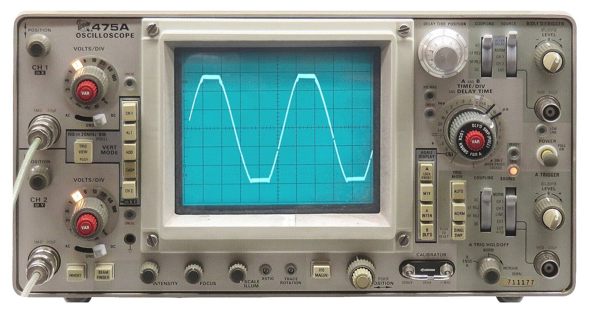
拉普拉斯：把微积分变成代数
微分方程难解，是因为有导数。拉普拉斯变换把时间函数变成复频率 s 的函数：微分变成乘 s，积分变成除 s，方程立刻变成代数方程。
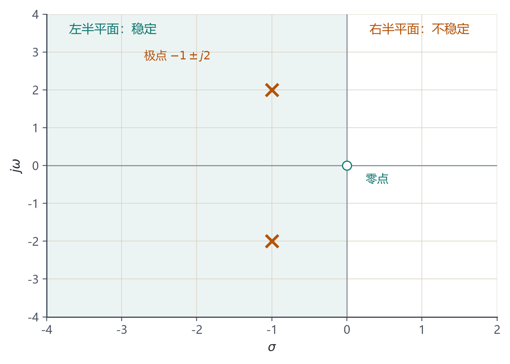
电路在 s 域长什么样
- 电阻：还是 R。
- 电感：变成 sL，初始电流变成附加源。
- 电容：变成 1/(sC)，初始电压变成附加源。
于是节点法、网孔法、戴维南全部照搬，只是把阻抗写成 s 的函数，初始条件写成电源。
四步：画 s 域模型 → 列方程解出响应 → 部分分式展开 → 查表变回时间函数。
系统函数是零初始条件下输出与输入的 s 域比值，相当于电路的“身份证”：极点定稳定与快慢，零点改波形形状，冲激响应就是它的反变换。
再深入一点：s 域模型与初始条件
拉普拉斯变换把微分变成乘 s、积分变成除 s。对单边信号，微分性质还要减去初始值：L{dx/dt} = sX(s) − x(0⁻)。
于是电容不再是单纯的 1/(sC)，还要串一个 v(0⁻)/s 的电压源；电感不再是单纯的 sL，还要串一个 L i(0⁻) 的电压源（也可改成并联电流源）。初始条件就这样变成了“附加电源”。
零初始条件下，输出与输入的 s 域比值就是系统函数 H(s)。极点全在左半平面则稳定；冲激响应就是 H(s) 的反变换；时域卷积在 s 域变成乘法。
VC = I/(sC) + v(0⁻)/s
VL = sLI − L i(0⁻)
补遗：拉氏变换的常用性质
- 线性：L{ax₁ + bx₂} = aX₁ + bX₂。
- 时移：L{x(t − a)u(t − a)} = e−asX(s)。
- 频移：L{e−atx(t)} = X(s + a)。
- 尺度：L{x(at)} = (1/a)X(s/a)，a > 0。
- 卷积：L{x₁ * x₂} = X₁(s)X₂(s)。
- 初值/终值：在极点都稳定的前提下，可由 sX(s) 的极限读出初值和终值。
这些性质把“解微分方程”变成“查表 + 代数”。真正的难点不在变换，而在建模：初始条件有没有画成源、受控源有没有贴住。
推导 · 微分性质为什么是 sX − x(0)
这就是为什么 s 域模型里会多出“初始条件电源”：不是硬加的，是分部积分掉出来的。
现实里：控制系统与汽车悬挂
工程师用拉氏变换把“弹簧—质量—阻尼”的微分方程变成代数式，算极点、画根轨迹，判断车会不会抖、刹车会不会点头。你坐的车，悬挂参数就是这么调出来的。
傅里叶：把波形拆成“音叉”
任何周期波形，都能拆成许多正弦波之和：一个基波，加上频率是整数倍的高次谐波。拆出来的每一条“谱线”，就是频谱。
频谱的两种长相
- 周期信号：频谱是一根根离散的谱线。
- 非周期信号：频谱变成连续的曲线。
方波有跳变，谐波按 1/n 慢慢衰减，所以要很多项才能接近；跳变附近总有约 9% 的过冲，加项只会让它变窄——这就是吉布斯现象。
负频率不是反向旋转的物理波，而是实信号双边谱的数学对称。只保留正频率就得到解析信号，它的虚部是原信号的希尔伯特变换（全局 90° 移相）。
cn 按 1/n 衰减（方波）
再深入一点：频谱、负频率与能量
傅里叶变换把非周期波形拆成连续的正弦谱，傅里叶级数把周期波形拆成离散的谱线。方波的谐波幅度按 1/n 衰减，所以跳变附近总有过冲（吉布斯现象）。
几条好用的性质：时移只改相位，频移把频谱整体搬家（调制），尺度变换让时域与频域“你窄我宽”，时域卷积对应频域相乘。
实信号的频谱必须共轭对称，所以正频率旁边总有“负频率”。只保留正频率得到解析信号，它的虚部是原信号的希尔伯特变换（全局 90° 移相）。Parseval 定理说：时域能量等于频域能量。
cn = (1/T)∫ x(t)e−jnω₀tdt
∫|x|²dt = (1/2π)∫|X|²dω
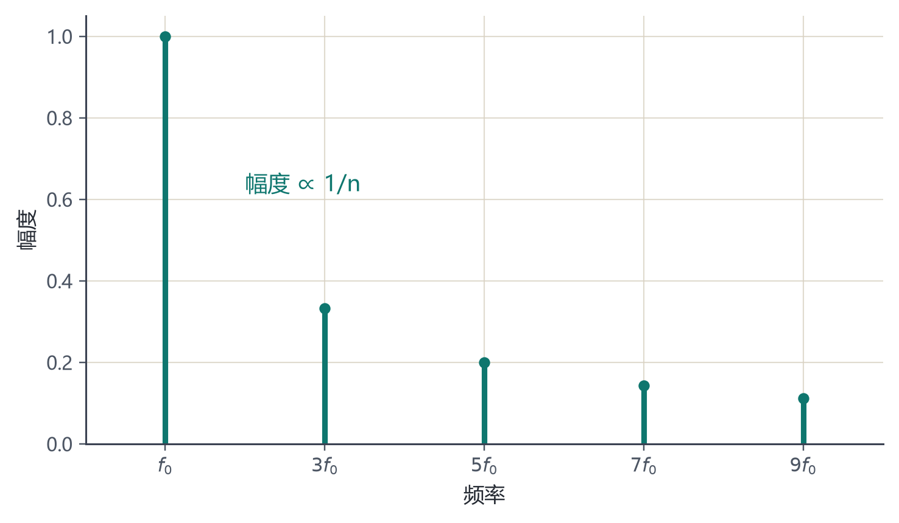
补遗：傅里叶变换的常用性质
- 时移：x(t − a) ↔ e−jωaX(ω)。
- 频移：ejω₀tx(t) ↔ X(ω − ω₀)；乘余弦就是把频谱左右各搬一半。
- 尺度：x(at) ↔ (1/|a|)X(ω/a)。时域越窄，频域越宽。
- 微分：dx/dt ↔ jωX(ω)；积分要多加一个 kδ(ω)，这个常数最容易被漏。
- 对称：X(t) ↔ 2πx(−ω)。
实信号的幅度谱是偶函数、相位谱是奇函数；这不是巧合，而是“负频率必须成对出现”的结果。
推导 · 傅里叶系数为什么那样算
“正交性”就是不同频率的复指数在一个周期内“互相抵消”，所以能把系数一个个“筛”出来。
现实里：音频均衡器与 JPEG
均衡器把音乐拆成多个频段，分别调大调小；JPEG 把图像分成 8×8 小块做频域变换，丢掉人眼不敏感的高频。它们用的都是“换一组基”的思想。
双口与变压器：两个门，一对线圈
双口是一个有两个“门”的黑箱，每个门一进一出。变压器则是两个线圈共享磁场，像一对咬合的齿轮。
双口的四种“记账法”
- z 参数：端口电压写成电流的函数，测时让一个端口开路。
- y 参数：端口电流写成电压的函数，测时让一个端口短路。
- ABCD：输入写成输出的函数，最适合级联。
- h 参数：混合着来，晶体管手册最爱用。
串联 z 相加，并联 y 相加，级联 ABCD 相乘。连接后如果某个端口不再“一进一出”，简单相加就不成立。
互感：一个线圈的电流变化，会在另一个线圈里感应电压。符号画不出绕向，就用同名端（黑点）标记。
i2 = −i1/N
Zin = N² ZL
理想变压器是全耦合、无损耗、电感无穷大的极限：电压比等于匝比，电流比是匝比的倒数，功率一点不丢。它还能变换阻抗：从一次侧看，二次侧负载要乘匝比的平方。
再深入一点：四种参数、T 型等效与变压器
双口有两个端口，每个端口必须“一进一出”。z 参数把端口电压写成电流的函数（另一端开路测），y 参数反过来（另一端短路测），ABCD 适合级联，h 参数适合晶体管。
双口可以等效成 T 型（三个阻抗）或 π 型（三个导纳）。串联时 z 相加，并联时 y 相加，级联时 ABCD 相乘。含独立源的双口多出常数项，可求双口戴维南。
互感把两个线圈绑在一起：λ₁ = L₁i₁ + Mi₂，λ₂ = Mi₁ + L₂i₂。同名端标记绕向；耦合系数由互感与自感决定。理想变压器是 k = 1、电感无穷大的极限：电压比等于匝比，电流比是倒数，阻抗按匝比平方折算。
i₂ = −i₁/N
Zin = N²ZL
k = M/√(L₁L₂)
再深入一点：互感、同名端与耦合电感方程
两个线圈共享磁场时，一个线圈的电流变化会在另一个线圈里感应电压，这就是互感。设两个线圈的电流都从同名端流入：
v21 = M di1/dt
v12 = M di2/dt
每个线圈的总电压 = 自感电压 + 互感电压：
v2 = M di1/dt + L2di2/dt
相量形式：
V2 = jωM I1 + jωL2I2
如果有一个电流从同名端流出，对应的互感项前面加负号。同名端不是“正极”，它只标记绕向；看反了，互感项的符号就反了。
耦合系数衡量两个线圈“咬合”得多紧：
k = 0 无耦合，k = 1 全耦合。理想变压器是 k = 1 且 L → ∞ 的极限。
同名端在同一侧时，耦合电感可以等效成 T 型：两个串联臂 L1−M、L2−M，中间并联臂 M。这样就把“磁耦合”变成了三个普通电感。
储能：
互感本身不耗能，但会改变能量在两个线圈之间的分配；耦合过强或方向不对，可能让等效电感出现负值。
补遗：ABCD、h 参数与互联条件
- ABCD：[V₁; I₁] = [A B; C D][V₂; −I₂]。级联时矩阵直接相乘；互易双口满足 AD − BC = 1。
- h 参数：V₁ = h₁₁I₁ + h₁₂V₂，I₂ = h₂₁I₁ + h₂₂V₂。晶体管手册里的 hfe、hie 就是它。
- 互联：串联 z 相加、并联 y 相加、级联 ABCD 相乘——前提是互联后每个端口仍然“一进一出”。
- T 型/π 型：z 参数对应 T 型（两个串联臂 + 一个并联臂），y 参数对应 π 型（三个导纳）。
双口理论的价值在于“模块化”：把放大器、滤波器、反馈网络各看成一个双口，先分别测参数，再按连接方式组合。
推导 · 变压器为什么能把阻抗“放大 N² 倍”
所以 1:2 的变压器把 8 Ω 负载“折”成 32 Ω；反过来，2:1 就把 32 Ω 折成 8 Ω。阻抗匹配就是靠这个平方关系。
现实里：充电头与电网升压
手机充电头里有一个高频变压器，把电压降下来、把阻抗“折”到开关管舒服的数值。电网用升压变压器把电送到远方，再用降压变压器送到你家——都是为了减少线路损耗、匹配阻抗。
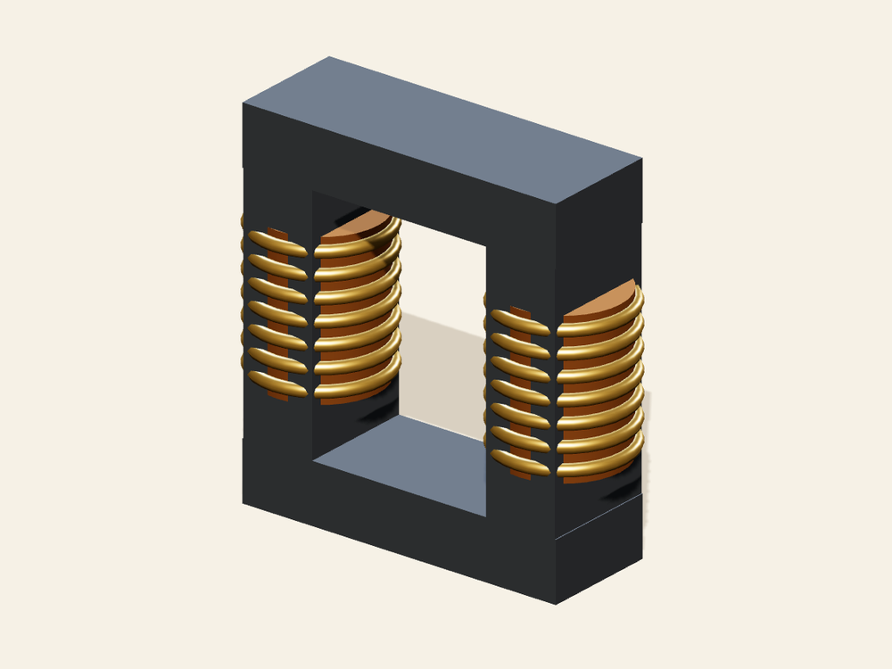
三相电路：三根线，一个旋转的场
单相电只能让一个线圈“来回推”；三相电让三个线圈按 120° 轮流推，合成一个匀速旋转的磁场。工业电机、电网、楼宇配电，基本都是三相。
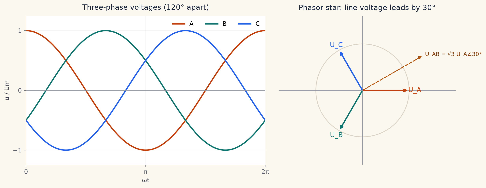
一、对称三相电源
三相对称电源由三个幅值相等、频率相同、相位互差 120° 的正弦源组成。以 A 相为参考：
uB = Um cos(ωt − 120°)
uC = Um cos(ωt + 120°)
三者瞬时值之和恒为零：
这就是“三根线能代替六根线”的根本原因：对称时，返回电流在任意瞬间互相抵消。相序 A→B→C 叫正序；交换任意两根线，旋转磁场就会反转。
二、Y 与 Δ：线量、相量
先把三个词分清：相电压是每相绕组两端的电压，线电压是两根火线之间的电压；相电流是绕组里的电流，线电流是火线里的电流。
| 连接 | 线电压 | 线电流 | 相位关系 |
|---|---|---|---|
| Y（星形） | UL = √3 UP | IL = IP | 线电压超前对应相电压 30° |
| Δ（三角形） | UL = UP | IL = √3 IP | 线电流滞后对应相电流 30° |
这就是常说的“380 V、220 V”：Y 接时线电压 380 V，相电压 220 V，二者相差 √3 倍。
Δ：UL = UP，IL = √3 IP
三、对称三相怎么算：只算一相
如果电源对称、负载也对称，那么三相的电压、电流只是彼此相差 120° 的“复制品”。算出 A 相，B、C 相直接旋转 −120°、+120° 即可。
思路：把三相化成单相
IA = UA/ZY，IB = IA∠−120°，IC = IA∠120°
IN = IA + IB + IC = 0（对称）
例题：380 V 线电压，Y 形负载
三相对称电源线电压 380 V，Y 形负载每相 Z = 10∠30° Ω。求相电压、相电流、三相有功和无功。
IP = 220/10 = 22 A
P = √3 × 380 × 22 × cos30° ≈ 12.5 kW
Q = √3 × 380 × 22 × sin30° ≈ 7.2 kvar
三个相电流大小相等，相位互差 120°；中线电流为零。每相负载吸收约 4.17 kW，三相合计 12.5 kW。
四、三相功率
对称三相的瞬时功率是恒定的，不像单相那样以 2ω 脉动；这是三相电机转矩平稳的原因。
Q = 3UPIPsinφ = √3 ULILsinφ
S = 3UPIP = √3 ULIL
对称三相还可以用两表法测功率：两个瓦特计的读数 P₁、P₂ 之和就是三相总有功；无功可由 Q = √3(P₁ − P₂) 得到（注意接法与相序）。
五、不对称与中线
实际负载常常不对称：一相重、两相轻。这时三个相电流不再互差 120°，中线电流不再为零。
- 四线制、中线可靠：各相电压仍被电源钳住，负载各自工作，但中线电流可能很大。
- 三线制、无中线：中性点会“漂移”，负载重的相电压降低、轻的相电压升高，可能烧坏设备。
- 中线不能装开关或熔断器：中线一断，三相电压失去约束，这就是“断零”事故。
现实里：工厂电机与楼宇配电
三相异步电机接三根火线就能产生旋转磁场，结构简单、转矩平稳。楼宇配电把三相分到不同楼层，尽量让各相负载平衡；单相空调、照明最终都挂在某一相与中线之间。
知识脉络：把整本书串成一条线
零散的知识点像零件，脉络才是装配图。整本书其实只有六条线；每条线都回答同一个问题：“下一步为什么需要上一步？”
18 章，一条问题链
每一章只回答一个“为什么需要它”的问题；右列是它交给下一章的“接口”。先看这张链，再看下面的六条线。
| 章节 | 只解决一个问题 | 核心公式 / 工具 | 它把什么交给下一章 |
|---|---|---|---|
| 00 数学工具箱 | 公式背后的积木 | y=kx+b | 把“变化率/累积”变成可算的图 |
| 01 把电想成水 | 电压、电流、电阻是什么 | v=Ri | 从物理直觉进入可测量量 |
| 02 三个基本量 | 怎么测量、怎么规定方向 | p=vi，w=∫p dt | 给 KCL/KVL 提供变量 |
| 03 两条铁律 | 连接关系如何约束变量 | Σi=0，Σv=0 | 把电路变成方程组 |
| 04 等效与戴维南 | 复杂网络如何变简单 | v=Voc+Req i | 给系统求解一个“黑箱” |
| 05 节点/网孔 | 怎样通用地列方程 | Gv=i，Zi=v | 给受控源/动态电路提供解法 |
| 06 受控源与运放 | 电路怎么会放大 | vo/vi=−Rf/Rin | 把“有源”带入后续动态 |
| 07 储能元件 | 电路为什么有记忆 | i=C dv/dt，v=L di/dt | 给一阶/二阶提供状态量 |
| 08 一阶电路 | 怎样指数式趋近 | y=y∞+(y0−y∞)e−t/τ | 给二阶提供时间常数 |
| 09 二阶电路 | 为什么会振荡 | s²+2ζω0s+ω0²=0 | 把“稳定”交给极点 |
| 10 相量 | 正弦稳态怎样变代数 | V=ZI，ZR=R，ZL=jωL，ZC=1/(jωC) | 把微分方程变成复数方程 |
| 11 交流功率 | 谁在真正做功 | S=VI*，P=VIcosφ，Q=VIsinφ | 给频响提供功率视角 |
| 12 频率响应 | 电路对不同频率的态度 | H(jω)=Vout/Vin，AdB=20log|H| | 把“一个频率”推广到“扫频率” |
| 13 拉普拉斯 | 微积分怎样变代数 | L{dx/dt}=sX−x(0) | 把“稳态”推广到“全部复频率” |
| 14 傅里叶 | 波形怎样拆成正弦 | X(ω)=∫x(t)e−jωt dt | 把“信号”拆成频谱 |
| 15 双口与变压器 | 模块怎样拼起来 | z/y/ABCD/h，v2=Nv1，i2=−i1/N | 把“电路”变成可复用模块 |
| 16 三相电路 | 三根线怎样一起供电 | UL=√3UP，P=√3ULILcosφ | 把单相扩展到三相系统 |
| 17 公式墙 | 怎样一页复习 | — | 把全书压成一张速查表 |
元件关系给一半方程，连接关系给另一半；两条铁律把“电路”变成“方程组”。
等效只对外负责：端口关系一样，内部可以面目全非。戴维南是这条线的终点，也是后面“黑箱思维”的起点。
受控源让“别处的电压电流”能指挥这里；运放把这种指挥推到极限（增益无穷大），反馈再把极限拉回可用。
储能元件把“过去”存成电压或电流；一阶是一个时间常数，二阶是两个储能元件“打架”，极点则把“稳定”变成一句几何判断。
相量是“只看一个频率”的拉氏；拉氏是“看所有复频率”的相量；傅里叶是“只站在虚轴上”的拉氏。三者是同一件事的三副面孔。
双口把“一个电路”变成“一个可复用的模块”；变压器则用磁场把两个模块的电压、电流、阻抗按匝比“咬合”起来。
六条线之间的“换乘站”
| 换乘 | 关系 | 一句话 |
|---|---|---|
| 相量 ↔ 拉氏 | s = jω | 只看稳态、只看一个频率，就是相量 |
| 拉氏 ↔ 傅里叶 | σ = 0 | 站在虚轴上，拉氏就退化成傅里叶 |
| 时域 ↔ 频域 | 卷积 ↔ 相乘 | 时域里“卷”得头疼，频域里只是乘法 |
| 串联 ↔ 并联 | 电阻 ↔ 电导 | 对偶：公式长得一样，角色互换 |
| 节点 ↔ 网孔 | KCL ↔ KVL | 一个数“流出的电流”，一个数“绕圈的电压” |
| 电容 ↔ 电感 | v ↔ i | 一个记电压，一个记电流；公式互抄 |
| 戴维南 ↔ 诺顿 | voc = R isc | 同一黑箱的两种“包装” |
| 一阶 ↔ 二阶 | τ ↔ Q | 一个时间常数；两个储能元件就开始“振” |
| 运放 ↔ 受控源 | μ → ∞ | 运放就是“增益无穷大的 VCVS” |
| 双口 ↔ 变压器 | z 参数 / 互感 | 变压器是一个特殊的双口 |
每学一个知识点，问自己三句：它的上游是谁（没有哪个概念它讲不通）？它的下游是谁（它解决了后面哪个问题）？它和哪条线是对偶（公式可以互抄）？
能答出这三句，知识就从“点”变成了“线”，再变成“网”。
公式墙与术语表
公式不是用来背的，而是用来“想起来”的。下面按依赖关系分组：先基本量，再电阻电路，再动态、正弦、变换域，最后双口与变压器。
① 基本量
vab = −vba
q = Cv，λ = Li
q(t) = q₀ + ∫i dt
p = vi（关联方向）
w = ∫p dt
② 电阻电路
v = Ri，i = Gv
R串 = R₁ + R₂
G并 = G₁ + G₂
v₂ = R₂/(R₁+R₂)·v
i₁ = R₂/(R₁+R₂)·i
③ 等效与定理
vs = R is
v = voc + Reqi
isc = voc/Req
Pmax = voc²/(4Req)
RL = Req
④ 动态元件
i = C dv/dt
v = L di/dt
wC = ½Cv²
wL = ½Li²
τ = RC 或 L/R
y = y∞ + (y0 − y∞)e−t/τ
⑤ 二阶与稳定
s² + 2ζω₀s + ω₀² = 0
ω₀ = 1 / √(LC)
Q = 1/(2ζ)
ζ < 1 欠阻尼，ζ = 1 临界，ζ > 1 过阻尼
极点全在左半平面 → 稳定
⑥ 正弦稳态
ZR = R，ZL = jωL，ZC = 1/(jωC)
V = ZI
ω₀ = 1 / √(LC)
Q = ω₀L/R（串联）
B = ω₀/Q
⑦ 功率
P = VrmsIrmscosφ
Q = VrmsIrmssinφ
S = P + jQ
S² = P² + Q²
共轭匹配：ZL = Zeq*
⑧ 频率与 Bode
AdB = 20log|H|
一阶低通：ωc = 1/RC
每极点 −20 dB/dec
GBW = A₀ωa
B = ω₀/Q
⑨ 拉普拉斯
L{dx/dt} = sX − x(0⁻)
VC = I/(sC) + v(0⁻)/s
VL = sLI − Li(0⁻)
Y(s) = H(s)X(s)
卷积 ↔ 相乘
⑩ 傅里叶
X(ω) = ∫x(t)e−jωtdt
cn = (1/T)∫x(t)e−jnω₀tdt
方波谐波 ∝ 1/n
∫|x|²dt = (1/2π)∫|X|²dω
负频率 ↔ 共轭对称
⑪ 双口
V₁ = z₁₁I₁ + z₁₂I₂
V₂ = z₂₁I₁ + z₂₂I₂
级联：ABCD 相乘
串联：z 相加；并联：y 相加
互易：z₁₂ = z₂₁
⑫ 变压器
λ₁ = L₁i₁ + Mi₂
k = M/√(L₁L₂)
v₂ = Nv₁，i₂ = −i₁/N
Zin = N²ZL
理想变压器功率为零
术语中英对照
| 中文 | English | 一句话解释 |
|---|---|---|
| 节点 | node | 擦掉元件身体后连成一片的导体 |
| 支路 | branch | 一个二端元件所在的“一条路” |
| 参考方向 | reference direction | 人为规定的正方向，反接只改符号 |
| 无源符号约定 | passive sign convention | 电流从电压“＋”端流入 |
| 等效 | equivalent | 端口电压电流关系相同 |
| 戴维南等效 | Thevenin equivalent | 开路电压串等效电阻 |
| 诺顿等效 | Norton equivalent | 短路电流并等效电阻 |
| 受控源 | dependent source | 大小由别处电压或电流决定 |
| 虚短 / 虚断 | virtual short / open | 运放两输入等压、不取电流 |
| 时间常数 | time constant | 走完约 63% 变化所需时间 |
| 阻尼 | damping | 振荡被消耗的快慢 |
| 品质因数 | quality factor | 谐振峰尖锐程度的度量 |
| 相量 | phasor | 正弦的复数“快照” |
| 阻抗 | impedance | 复数版的电阻 |
| 谐振 | resonance | 感抗与容抗互相抵消 |
| 功率因数 | power factor | 有功与视在功率之比 |
| 频率响应 | frequency response | 不同频率下的增益与相移 |
| 系统函数 | system function | 零初始条件下输出与输入的 s 域比 |
| 极点 | pole | 让系统函数趋于无穷的 s 值 |
| 频谱 | spectrum | 各频率分量的幅度与相位 |
| 双口 | two-port | 有两个端口的子电路 |
| 互感 | mutual inductance | 一个线圈的电流在另一个线圈感应电压 |
| 同名端 | dot convention | 标记绕向的黑点 |
| 理想变压器 | ideal transformer | 无损耗、全耦合、电感无穷大 |
配套教材：章节原文
这里把《电路》教材的章节原文按顺序放进网站。网页负责讲直觉、图和互动；原文负责查定义、看例题、对符号。两边对照着读，比只看其中一边更稳。